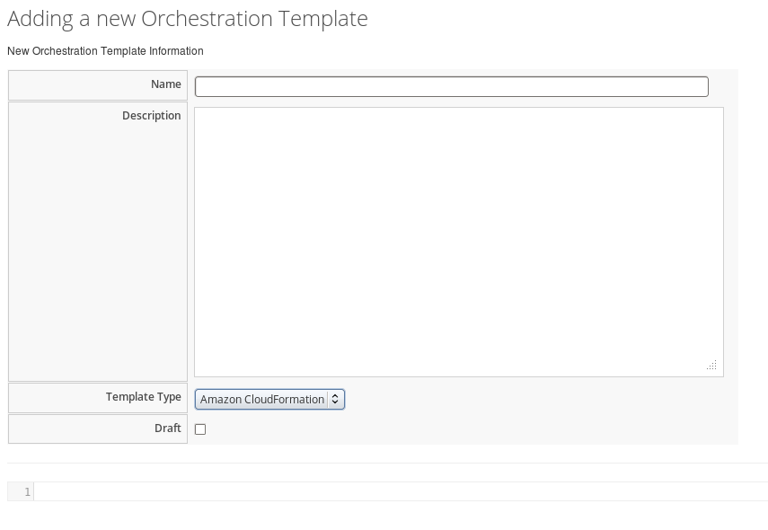
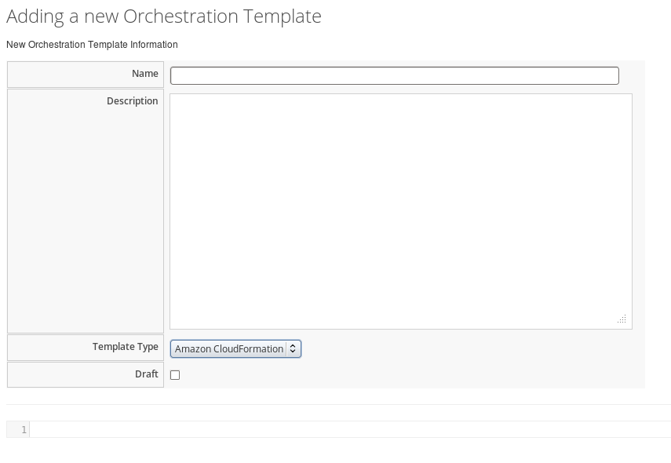
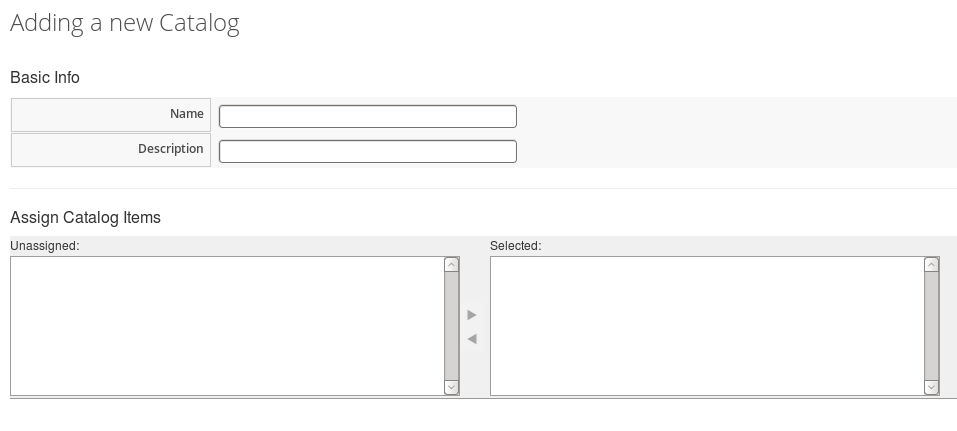
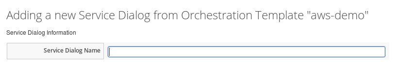
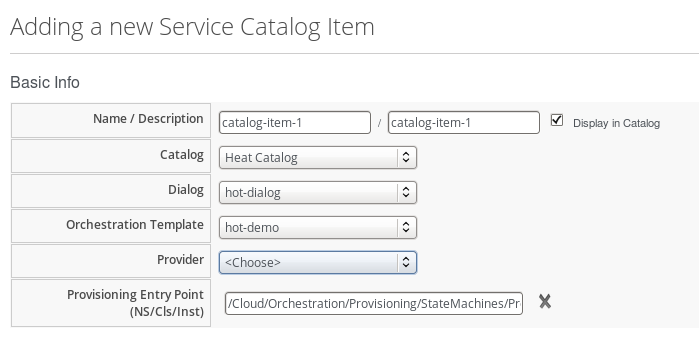
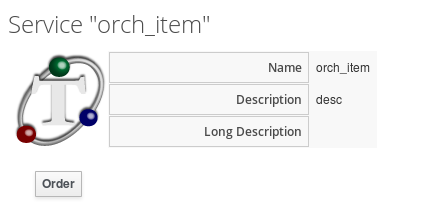
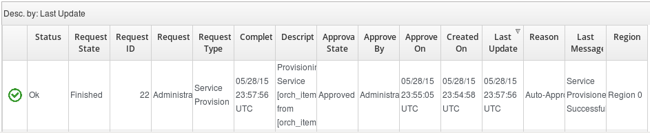
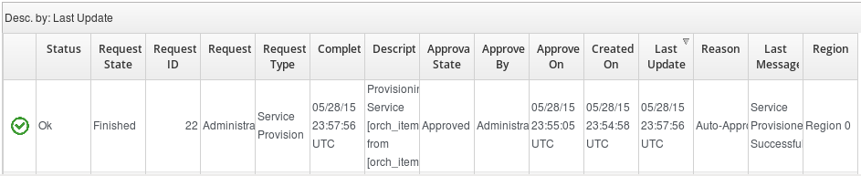
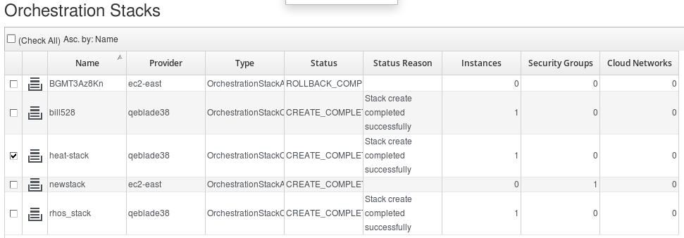
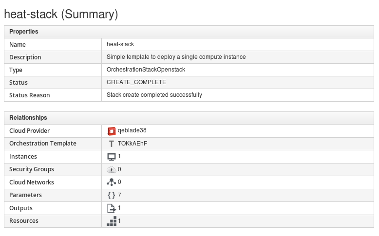

Part I. Introduction
AWS CloudFormation enables users to orchestrate the instantiation of multi-instance services via templates. You can use CloudFormation’s sample templates or create your own templates to describe the AWS resources, and any associated dependencies or runtime parameters, required to run your applications. Similarly, you can configure and monitor cloud resources in Red Hat Enterprise Linux OpenStack Platform using the Orchestration service. The Orchestration service provides a framework through which you can define an instance’s resource parameters (for example, floating IPs, volumes, or security groups) and properties (for example, key pairs, image to be used, or flavor) using OpenStack Heat templates.
Instances deployed using templates through the orchestration service are known as stacks. A user can author the stack templates, or can upload them from other sources. Red Hat CloudForms has enabled CloudFormation and Heat integration, and now allows you to launch, delete, and update stacks using the dashboard.
Chapter 1. Integration with AWS CloudFormation and OpenStack Heat
Red Hat CloudForms' integration with AWS CloudFormation and OpenStack Heat provides an ability to:
- Inventory all AWS CloudFormation and OpenStack Heat stacks and elements into CFME’s VMDB.
- Model the relationships of instances to their stacks, inclusive of the UI. Example, selecting an instance within a region that is within a stack, the UI shows this on the standard instance view.
- Model the stack and its elements in the UI.
When importing a template into Red Hat CloudForms, the selected elements are converted according to their type. For example, lists convert to list boxes, and single items convert to text boxes.
Chapter 2. Cloud Orchestration
Cloud Orchestration is a service that allows you to create, update and manage cloud resources and their software components as a single unit and then deploy them in an automated, repeatable way through a template. Templates use a human-readable syntax and can be defined in text files (thereby allowing users to check them into version control). Templates allow you to easily deploy and re-configure infrastructure for applications within your cloud. A user can author the stack templates, or can upload them from other sources.
2.1. Adding a New Orchestration Template
Use this procedure to add new orchestration templates using the dashboard UI.
- Navigate to Services → Catalog and select Orchestration Templates in the accordion menu.
-
Click
 Configuration, then click
Configuration, then click
 Create a new Orchestration Template. The Adding a new Orchestration Template window is displayed.

Create a new Orchestration Template. The Adding a new Orchestration Template window is displayed.

- In Name, enter a name for the new template.
- In Description, enter a description for the template. Select Amazon CloudFormation or OpenStack Heat from the Template Type list. The default is Amazon CloudFormation.
- You can select the Draft box to create a draft template.
- Define your new template following the specification structure of the selected Template Type.
- Click Add.
2.2. Editing Orchestration Templates
Use this procedure to edit orchestration templates using the dashboard UI.
- Navigate to Services → Catalog and select Orchestration Templates in the accordion menu.
- Select the orchestration template you want to edit from the All Orchestration Templates list.
-
Click
Configuration, then click
 Edit selected Orchestration Template. The Edit selected Orchestration Template window is displayed.
Edit selected Orchestration Template. The Edit selected Orchestration Template window is displayed.
- You can only edit the Name and Description of a read-only template as there can be stacks associated with the selected template. For templates that are not read-only, you can edit all content in the template as required.
- Click Save.
2.3. Copying Orchestration Templates
Use this procedure to copy an orchestration template to create a new template.
- Navigate to Services → Catalog and select Orchestration Templates in the accordion menu.
-
Click
Configuration, then click
 Copy selected Orchestration Template. The Copy selected Orchestration Template window is displayed.
Copy selected Orchestration Template. The Copy selected Orchestration Template window is displayed.
- You can copy the selected template to create a new template, and include the changes as required. Note that in order to create the new template its content must be unique.
- Click Save.
2.4. Deleting Orchestration Templates
Use this procedure to delete orchestration templates using the dashboard UI.
- Navigate to Services → Catalog and select Orchestration Templates in the accordion menu.
- Select the orchestration template you want to delete from the All Orchestration Templates list.
-
Click
Configuration, then click
 Remove selected Orchestration Template.
Remove selected Orchestration Template.
- A warning window to confirm the permanent removal of the selected item from the VMDB appears.
- Click OK.
This instantly deletes the selected orchestration template. Note that only non read-only templates can be removed.
Chapter 3. CloudFormation Provisioning via Services
After creating your template, you can add it as a catalog item to the Service Catalog. Stacks can then be created from templates and launched from the Service Catalog.
Chapter 4. Adding a New Catalog
Use this procedure to add a new catalog using the dashboard UI.

-
Navigate to Services → Catalog and select Catalogs in the accordion menu. .Click
Configuration, then click
Add a New Catalog. The Adding a new Catalog window is displayed.
- In Basic Info, add Name and Description for the new catalog.
- You can assign catalog items in Assign Catalog Item.
- Click Add.
Chapter 5. Adding a New Service Dialog
Use this procedure to add a new service dialog based on the input parameters defined in the orchestration template.
- Navigate to Services → Catalog and click Orchestration Templates in the accordion menu.
- From All Orchestration Templates, select the orchestration template you want to create a service dialog from.
-
Click
Configuration, then click
Create Service Dialog from Orchestration Template. The Adding a new Service Dialog from Orchestration Template window is displayed.

- In Service Dialog Information, add a Service Dialog Name.
- Click Save.
Chapter 6. Adding a New Catalog Item
Use this procedure to add a new service catalog item using the dashboard UI.
- Navigate to Services → Catalog and select Catalog Items in the accordion menu.
-
Click images:1847.png[Configuration] Configuration, then click
Add a New Catalog Item. The Adding a new Service Catalog Item window is displayed.

- Choose Orchestration from Catalog Item Type.
- In Basic Info, add Name and Description. Select the Display in Catalog box. 
- Select the Catalog, Dialog, and Orchestration Template from their respective list.
- Select Provisioning Entry Point. The default is
/Cloud/Orchestration/Provisioning/StateMachines/Provision/default.
- Click Add.
Chapter 7. Ordering Service
Use this procedure to order a service catalog item using the dashboard UI.
- Navigate to Services → Catalog and select Service Catalogs in the accordion menu. From All Services catalogs, select the catalog item that you want to order. The Service window with the name and description of the service to be ordered is displayed. 
-
Click Order. The Order Service window with Options and Parameter is displayed.

- Enter stack name in Stack Name.
- The On Failure value is Rollback by default.
- Timeout is optional. You can type the number of seconds to timeout the provision at the provider side. Note that the number of seconds get converted (rounded) to minutes when ordering the provision through OpenStack. For example, 100 seconds rounds to two minutes.
- You can use the default parameter values from the template, or enter new values as appropriate. Note that the Parameters vary per dialog; therefore, the parameters shown in the above screenshot may or may not exist depending on the dialog.
- Click Submit.
The order request is submitted. After a request has been approved, the various stages of fulfillment are executed. You can see the progress status of the provisioning process in Services → Requests.
Chapter 8. Orchestration Stacks
After ordering a service, you can see the progress state of the provisioning process in Services → Requests.
-
Initially, the Request State shows Pending with its Approval State as Pending Approval.

-
After the request is Approved, the various stages of fulfillment are executed, and reflect accordingly under Request State.
 

- After the Request State is Finished, you can see the stack entry created in Clouds → Stacks. In the screen capture below, you can see the heat-stack we created from the catalog item ordered from the Service Catalog as shown in the previous section. 
- You can click on the stack to see a summary of its properties and relationships, and the instance(s) included in the stack. You can click on the instance(s) to see all instance details. 
You have now deployed instances and its associated collection of resources (called a stack) using an orchestration template.